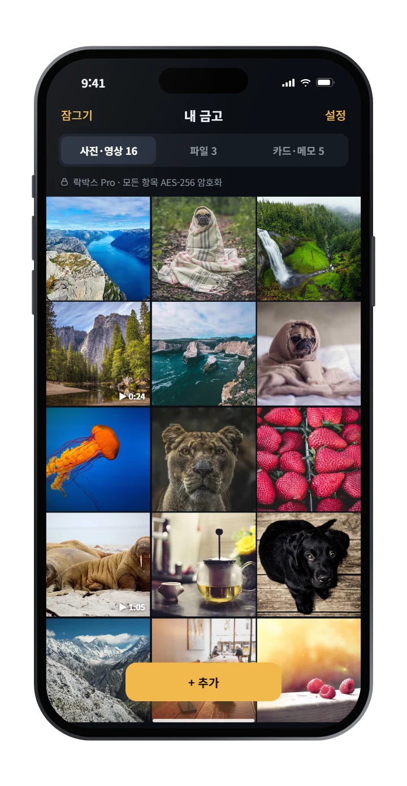
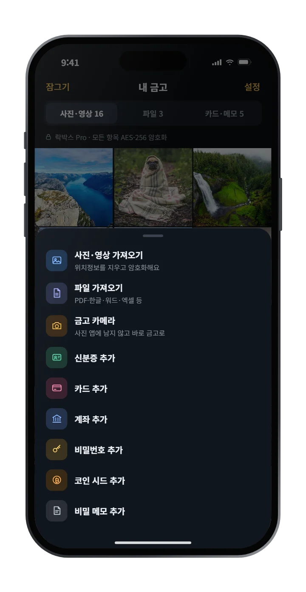

아이폰 사진 숨기기 3가지 방법, 폰 빌려줄 때도 안 들키게
폰을 잠깐 빌려줬는데 상대가 앨범을 넘기기 시작하면, 그때는 이미 늦습니다. 미리 해 둘 수 있는 방법을 순서대로 정리했어요.
결론부터: 사진을 연 채 더보기(…) 버튼을 누르고 가리기를 누르면 '가려진 항목' 모음으로 옮겨집니다. 이 모음은 기본으로 Face ID로 잠기지만, 폰 잠금 암호로도 열리고 iCloud 사진을 쓰면 다른 기기에도 함께 가려집니다. 폰을 잠깐 건넬 때는 사용법 유도로 한 앱만 쓰게 하고, 폰 암호를 아는 사람이 있다면 따로 잠기는 금고 앱에 두세요.
방법 1. 사진 앱의 '가리기' 기능
애플 사용 설명서 기준 순서입니다. 1장이든 여러 장이든 같은 메뉴를 씁니다.
- 사진 앱에서 숨길 사진을 엽니다. 여러 장이면 보관함에서 오른쪽 위 선택을 누르고 사진을 고릅니다.
- 더보기(…) 버튼을 누릅니다.
- 가리기를 누릅니다.
- 사진은 보관함에서 사라지고 가려진 항목 모음으로 이동합니다. 다른 곳에서는 보이지 않습니다.
다시 꺼내려면 모음 → 기타 → 가려진 항목 → 앨범 보기로 들어가 잠금을 풀고, 사진을 연 뒤 더보기(…) → 가리기 해제를 누릅니다.
동영상도 같은 방법으로 숨깁니다. 가린 뒤에도 남는 곳까지 지우려면 → 아이폰 동영상 숨기기, 가린 뒤에도 남는 4곳까지 지우는 법
방법 2. 잠그고, 앨범 이름까지 감추기
가리기만 하면 '가려진 항목'이라는 모음 이름이 그대로 보입니다. 아래 두 설정을 같이 해 두면 숨긴 게 있다는 사실도 덜 드러납니다.
- 설정 → 앱 → 사진으로 들어갑니다. iOS 17 이하는 설정 → 사진입니다.
- Face ID 사용(Touch ID 기종은 Touch ID 사용, 없으면 암호 사용)이 켜져 있는지 봅니다. 지금 iOS는 기본으로 켜져 있지만, 누가 꺼 두었을 수 있습니다.
- 같은 화면에서 '가려진 항목' 앨범 보기를 끕니다. 사진 앱에서 그 모음이 아예 나오지 않습니다.
이 잠금은 '최근 삭제된 항목'에도 함께 걸립니다. 켜도 열리는 경우는 → 아이폰 가려진 항목 잠금, 켜도 열리는 4가지 경우 (Face ID 설정법)
폰 빌려줄 때: 사용법 유도로 한 앱만 열리게
전화 한 통, 사진 한 장 보여 주려고 폰을 건넬 때 쓰기 좋은 기능입니다. 켜 두면 지금 연 앱 밖으로 나갈 수 없습니다.
- 설정 → 손쉬운 사용 → 사용법 유도를 켭니다.
- 암호 설정에서 사용법 유도 암호를 정하고, Face ID로 끝낼지 고릅니다.
- 건넬 앱(예: 전화, 특정 사진 1장을 연 사진 앱)을 엽니다.
- 측면 버튼을 세 번 누르고 시작을 누릅니다.
- 돌려받으면 측면 버튼을 다시 세 번 누르고 인증한 뒤 종료를 누릅니다.
주의할 점이 있습니다. 사진 앱을 연 채 건네면 그 앱 안에서는 다른 사진을 넘길 수 있습니다. 화면 일부에 원을 그려 터치를 막거나, 사진 1장만 띄운 뒤 세션 설정에서 터치를 끄세요. 또 애플 안내에 따르면 사용법 유도 중에는 충돌 감지와 긴급 서비스를 쓸 수 없습니다.
건네기 전에 함께 점검할 것들은 → 폰 빌려줄 때 사진 안 보이게 하는 법, 건네기 전 5가지 점검
폰 암호와 다른 비밀번호로, 만든 사람도 못 여는 금고.
락박스는 사진을 서버에 올리지 않습니다.
방법 3. 금고 앱에 따로 보관하기
사진 앱의 잠금은 결국 폰 잠금 암호와 같은 열쇠를 씁니다. 가족이나 연인이 폰 암호를 안다면 따로 정한 비밀번호로 잠기는 곳이 필요합니다. 락박스는 폰 암호와 별개인 3×3·5×5 패턴이나 PIN으로 잠기고, 사진을 아이폰 안에서 AES-256-GCM으로 암호화합니다. 서버가 없어서 만든 사람도 열 수 없습니다.


사진을 가져온 뒤 원본을 지울지 바로 묻고, 틀린 시도는 침입 기록으로 남습니다. 비밀번호를 잊으면 한글 12단어 복구 문구로만 다시 열 수 있습니다. 무료로 10개까지 넣어 볼 수 있습니다. 금고 앱을 고를 때는 사진이 서버로 올라가는지를 꼭 확인하세요. → 사진 금고 앱 추천 전 꼭 볼 것: '만든 회사도 못 여는' 앱 고르는 5가지 기준
어떤 방법을 써야 할까?
| 상황 | 추천 | 폰 암호 아는 사람에게 |
|---|---|---|
| 보관함에서 잠깐 안 보이게만 | 가리기 | 열림 |
| 폰을 잠깐 건넨다 | 사용법 유도 | 사용법 유도 암호를 따로 정하면 막힘 |
| 가족·연인이 폰을 자주 본다 | 가려진 항목 잠금 + 앨범 보기 끄기 + 금고 앱 | 금고 앱만 막힘 |
| 신분증·통장 사진을 보관한다 | 서버 없는 금고 앱 | 막힘 |
가린 사진이 그래도 보이는 경우
'가리기'는 사진 앱 안에서 사진을 옮기는 기능입니다. 아래 경우에는 가린 사진도 다른 사람 눈에 띌 수 있습니다.
| 경우 | 왜 보이나 | 대처 |
|---|---|---|
| 폰 잠금 암호를 아는 사람 | 가려진 항목 잠금은 폰 암호로도 풀림 | 폰 암호를 바꾸거나 별도 비밀번호 금고 사용 |
| 같은 Apple 계정의 아이패드·맥 | iCloud 사진을 쓰면 모든 기기에서 함께 가려진 채로 있음 | 다른 기기의 잠금도 확인 |
| 메신저 대화방·공유 앨범 | 보낸 사본은 사진 앱의 '가리기'와 무관 | 대화방 사진함과 공유 앨범에서 직접 삭제 |
| 최근 삭제된 항목 | 지운 사진은 30일 동안 이 모음에 남음 | 최근 삭제된 항목에서도 지우기 |
흔한 실수도 함께 점검하세요.
- 가린 줄 알고 삭제만 했다: 삭제와 가리기는 다릅니다. 삭제한 사진은 '최근 삭제된 항목'에 30일 남습니다.
- 금고 앱에 옮기고 원본을 그대로 뒀다: 사진 앱의 원본과 최근 삭제된 항목까지 지워야 완전히 빠집니다.
- 폰 암호가 생일·0000 같은 숫자다: 가려진 항목 잠금의 실제 열쇠는 폰 암호입니다.
- 사진 앱을 연 채 폰을 건넸다: 이미 잠금을 풀어 둔 화면이면 다시 인증 없이 보입니다. 건네기 전에 앱을 닫으세요.
- 앨범 보기를 켜 둔 채다: '가려진 항목'이라는 이름만으로도 숨긴 게 있다는 걸 알 수 있습니다.
사진 앱 자체를 잠그는 방법은 → 아이폰 앱 잠금 방법, Face ID로 잠그고 숨겨도 드러나는 4곳
폰 암호를 알아도 못 여는 사진 금고.
락박스는 사진을 아이폰 안에서만 암호화해 보관합니다.
자주 묻는 질문
가린 사진도 iCloud에 백업되나요?
네. iCloud 사진을 쓰면 가린 사진도 그대로 올라가고, 같은 계정의 다른 기기에서도 가려진 상태로 보입니다.
'가려진 항목' 앨범까지 안 보이게 할 수 있나요?
설정 → 앱 → 사진에서 '가려진 항목' 앨범 보기를 끄면 사진 앱에서 모음이 사라집니다. 다시 켜면 돌아옵니다.
금고 앱으로 옮기면 사진 화질이 떨어지나요?
앱마다 다릅니다. 락박스는 원본 해상도로 암호화해 보관하고, 사진에 들어 있는 위치정보(GPS)만 지웁니다.
금고 앱을 지우면 사진은 어떻게 되나요?
서버가 없는 금고 앱은 앱을 지우면 안의 사진도 함께 지워집니다. 지우기 전에 암호화 백업 파일을 만들어 두세요.